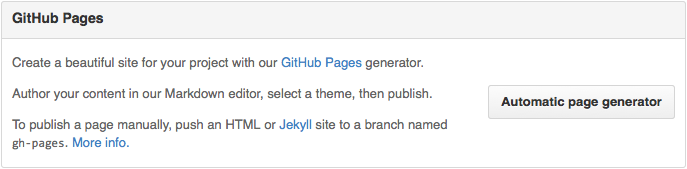

发布到Github Pages
将静态网站直接发布到Github Pages
可以将编写好的.md文件通过Gitbook处理成静态网站，然后发布到Github Pages上。
我的Github Pages是使用Octopress来进行构建的，于是就写了一个简单的脚本，将生成好的Gitbook直接同步到我的octopress项目中。
#!/bin/sh
Usage(){
echo "welcome use front-end release script
-----------------------------------------
use it require input your deploy target
gook luck!
author:
wolf.deng@gmail.com
-----------------------------------------
Usage:
# 发布github.io
./deploy.sh github.io
"
}
die( ){
echo
echo "$*"
Usage
echo
exit 1
}
git pull
# get real path
cd `echo ${0%/*}`
abspath=`pwd`
#清除之前生成的文件
rm -rf $abspath/build
TARGET=$1
PROJECT='gitbook-howtouse'
sync( ){
case $* in
"github.io" )
echo "sync $PROJECT gitbook website to $TARGET"
GITHUB_PROJECT="~/workspace/github/tonydeng.github.io/source/gitbook-zh"
Sync="rsync -avu --delete --exclude '*.sh' --exclude '.git*' --exclude '.DS_Store' $abspath/build/$PROJECT $GITHUB_PROJECT"
echo $Sync
eval $Sync
cd $GITHUB_PROJECT
rake generate
rake deploy
;;
esac
}
build(){
echo "build $PROJECT document"
OUTPUT="./build/$PROJECT"
gitbook init
rm -rf $OUTPUT
gitbook build . --output=$OUTPUT
}
blog(){
echo "build & sync $PROJECT to github.io"
build
sync $TARGET
}
# 判断执行参数，调用指定方法
case $TARGET in
github.io )
blog
;;
* )
die "parameters is no reght!"
;;
esac
这样就可以直接调用脚本来将写好的Gitbook发布到我的Github Pages服务了。
这样其他人就可以通过下面的链接来查看这本Gitbook使用入门了。
使用项目的Pages服务
除了上面的直接发布静态文件到Github Pages的方法以外，还可以使用一个单独的项目的Github Pages功能。
创建仓库与分支
- 登陆到Github，创建一个新的仓库，名称我们就命名为
book，这样我就得到一个book仓库。 - 克隆仓库到本地：
git clone git@github.com:/USER_NAME/book.git - 创建一个新分支：
git checkout -b gh-pages，注意，分支名必须为gh-pages。 - 将分支push到仓库：
git push -u origin gh-pages。 - 切换到主分支：
git checkout master。
经过这一步处理，我们已经创建了gh-pages分支了，有了这个分支，Github会自动为你分配一个网址。
你可以在项目页面右下角setting中看到：

同步静态网站代码到分支
下面我们就可以将build好的静态网站代码同步到gh-pages分支中去了：
- 切换出master分支目录。我们需要将
gh-pages分支内容存放在另外一个目录中 - 克隆
gh-pages分支：git clone -b gh-pages git@github.com:USER_NAME/book.git book-end。这步我们只是克隆了gh-pages分支，并存放在一个新的目录book-end。 - Copy静态网站到
book-end目录中 - Push到仓库
然后，等十来分钟后，你就可以访问到你的在线图书了。以后，只要你每次修改之后，将生成静态网站Copy到book-end目录，然后Push一下就OK了。